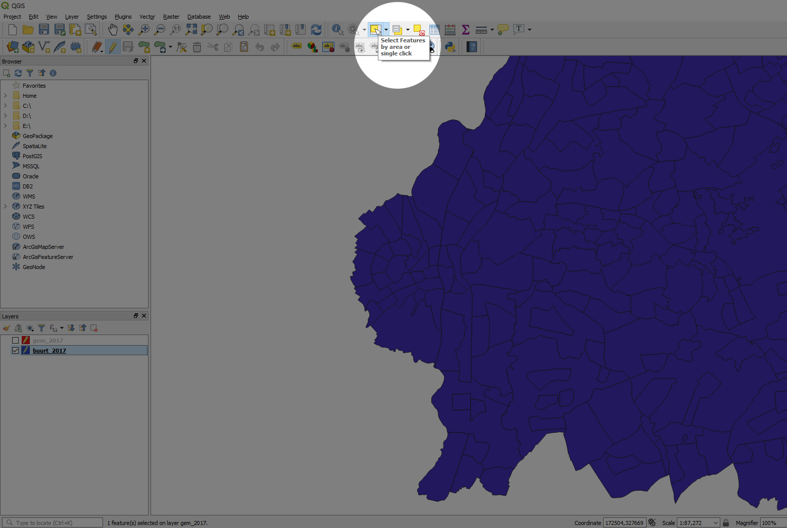
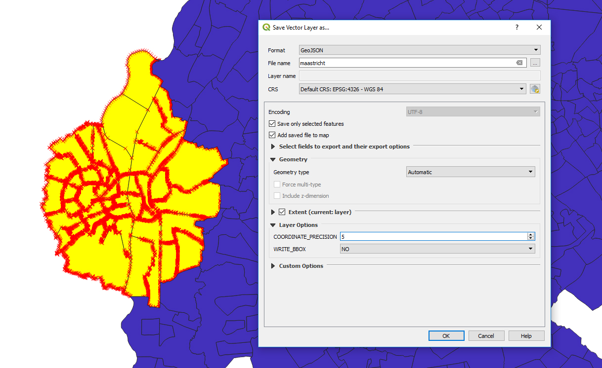

What we'll make:
This map represents each neighborhood of the city of Maastricht. The color is based on the number of inhabitants in each area: darker colors means more people. View the live example here.
Before getting started, there are two things we need that aren’t related to JavaScript/D3. These are QGIS and a shapefile of the neighborhoods of the Netherlands.
QGIS is open source software that allows the editing and analyzing of geospatial information. It’s available for Windows, Mac, Linux and BSD. A shapefile is a geospatial vector format used by GIS software, such as QGIS. For the shapefile we need, we head to the website of the CBS (the Dutch Central Agency for Statistics). The CBS has a page dedicated for geographic data, with shapefiles freely available.
Download QGIS here and download the Shapefile here. For the Shapefile, scroll down to Downloads > ZIP “Wijk- en Buurtkaart 2017”.
We open up QGIS and drag the file buurt_2017.shp and gem_2017.shp inside. We now see the municipalities and the neighborhoods. In the bottom left we can switch the visibility of the layers on and off by clicking on the checkmarks.
Next, we right click on the buurt_2017 layer and select toggle editing. By doing this, we can individually select neighborhoods. Zoom in on the municipality and uncheck the gem_2017 layer. In the top middle of your screen, select the button Select Features by area or single click.
Make sure the buurt_2017 layer is selected and start selecting the neighborhoods. By checking and unchecking the municipalities layer, you can check if you have selected all of the neighborhoods for the municipality. To make selections, just click and drag your mouse. For individual selections, use shift+click.
When your neighborhoods are selected, right click on the buurt_2017 layer and select save as… Next, here are the settings we need:
Leave the rest as it and hit OK.
Let’s get started with the code! Make sure to add an SVG with the id map in the html. My index.html file looks like this:
<!DOCTYPE html>
<html lang="en">
<head>
<meta charset="UTF-8">
<title>Maastricht</title>
<link rel="stylesheet" href="css/style.css">
<link href="https://fonts.googleapis.com/css?family=Roboto:400,700"
rel="stylesheet">
<script src="https://d3js.org/d3.v4.min.js"></script>
</head>
<body>
<svg id="map"></svg>
<script src="js/index.js"></script>
</body>
</html>
We start by defining our margins, width and height. I set my width to 300 and height to 400, but the size is completely up to you. Next we create a variable svg and select the #map using d3.select(“#map”).
var margin = { top: 50, right: 50, bottom: -20, left: 50 },
width = 300 - margin.left - margin.right,
height = 400 - margin.top - margin.bottom;
var svg = d3.select("#map")
.attr("width", width + margin.left + margin.right)
.attr("height", height + margin.top + margin.bottom)
.append("g")
.attr("transform", "translate(" + margin.left + "," + margin.top +")");
Next comes the mapping part. We have to set up a projection for the display of the map. I use geoMercator in this case, because most online maps (like Google Maps) and latitude and longitude finders use the Mercator projection as well. Use a latitude and longitude finder to find the correct coordinates. I enter Maastricht and end up with coordinates 50.851368 for the latitude and 5.690973 for the longitude. We need to center our projection on these coordinates when we enter our path.
var projection = d3.geoMercator()
.center([5.690973, 50.851368])
.scale(110000)
.translate([width / 2, height / 2]);
var path = d3.geoPath()
.projection(projection);
Let’s create two variables, one for the values of the population and one to create a color palette. I use the following:
var totaalInw = [0, 500, 1000, 2000, 3000, 4000, 5000, 6000, 7000];
var palette = ['#fff7f3','#fde0dd','#fcc5c0','#fa9fb5','#f768a1','#dd3497',
'#ae017e','#7a0177','#49006a'];
Next, we create a variable in which we use d3.scaleLinear and enter the two previously created variables:
var color = d3.scaleLinear()
.domain(totaalInw)
.range(palette);
Now, let’s create the map. I create a d3.json function with a path that goes to my maastricht.json file. Inside, I create a function that creates the map. Then we add in some CSS to define the outline of our neighborhoods. I use the following code:
d3.json("../map/maastricht.json", function(err, json) {
if (err) throw error;
function drawMap() {
svg = svg.append("g")
.attr("class", "maastricht")
.selectAll("#map")
.data(json.features);
svg
.enter().append("g")
.append("path")
.attr("d", path);
};
drawMap();
});
g.maastricht path {
stroke: white;
stroke-width: 1px;
stroke-linejoin: round;
stroke-linecap: round;
}
g.maastricht path:hover {
opacity: .85;
transition: .2s;
}
You should now be seeing the city with its neighborhoods outlined in white. Change the stroke color to whatever you please. I changed it to indigo, ‘cause purple is dope.
Let’s change the fill color of each neighborhood next. We do this simply by adding a style function and have it return the color based on its inhabitants. In the JSON file there’s a “AANT_INW” key that has the corresponding value stored in it. Add this underneath the path, so we end up with the following code:
svg
.enter().append("g")
.append("path")
.attr("d", path)
.style("fill", function(d) {
return color(d.properties.AANT_INW);
});
We should now be seeing the colored neighborhoods. The darker colors represent neighborhoods with more inhabitants. Next up I create a variable called tip. We append a div to this one with the class of tooltip and set its style to an opacity of 0. We will create this tooltip in CSS.
var tip = d3.select("body").append("div")
.attr("class", "tooltip")
.style("opacity", 0);
div.tooltip {
position: absolute;
width: 160px;
height: 100px;
padding: 15px;
background: #eee;
border: 1px solid #444;
border-radius: 3px;
pointer-events: none;
}
To make this a working tooltip, I added the following code after the previously create style function where we bind the colors to the number of inhabitants:
.on("mouseover", function(d) {
tip.transition()
.duration(300)
.style("opacity", .9)
tip.html(
"<h4>" + "Plaats " + "</h4>" + "<p>"
+ d.properties.BU_NAAM + "</p>" +
"<br>" + "<hr> " +
"<h4>" + "Inwoners " + "</h4>" + "<p>"
+ d.properties.AANT_INW) + "</p>"
})
.on("mousemove", function(d) {
tip
.style("left", (d3.event.pageX + 15) + "px")
.style("top", (d3.event.pageY + 5) + "px");
})
.on("mouseout", function(d) {
tip.transition()
.duration(300)
.style("opacity", 0);
});
In the CSS, I added some typography and styling to make this functional:
html {
font-family: 'Roboto', sans-serif;
}
body {
background: whitesmoke;
}
h1, h2, h3, h4, p, a, span, div {
margin: 0;
}
.tooltip p {
margin: 0;
display: inline;
width: 200px;
}
You should now be seeing a fully working city map with a tooltip! View the full code here.